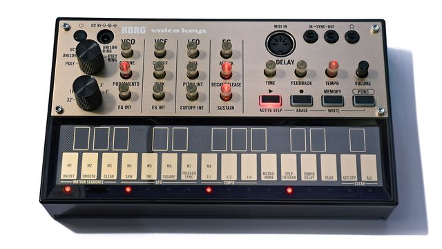

Scheda 070 · 2013 · Giappone
Korg Volca Keys
Quando trapelarono le prime foto, in rete lo presero per un falso. Era vero, e costava 150 dollari
Un synth analogico a 3 voci col sequencer dentro, in una scatola che sta in una mano.
Il suono vero · 0:36
Un Volca Keys vero che suona un giro dal suo sequencer, in POLY e in UNISON, con le manopole del filtro girate a mano, un po' di portamento e di delay, senza altri effetti.
0:00 / 0:36
Registrazione di Attosaur · CC BY-SA 4.0 · Wikimedia Commons · estratto di 36 s, volume normalizzato
- USCITA
- 2013
- VOCI
- 3
- TASTI
- 27 a sfioramento
- PILE
- 6 stilo
La macchinaChe cos'è
È una scatola di plastica nera trasparente di 19 centimetri per 11 e mezzo, e senza pile pesa 377 grammi. Le pile sono 6 stilo e durano circa 10 ore. Dentro c'è un altoparlante piccolo, quindi si suona sul divano senza collegare niente. Le manopole sono trasparenti e sotto alcune si accende un LED rosso. Al posto della tastiera c'è una lastra con 27 tasti disegnati, che si suonano sfiorandoli. Il Volca Keys l'ho sempre trovato il più strano dei tre, e anche il più bello da guardare.
Chi l'ha costruitaTatsuya Takahashi
Tatsuya Takahashi cresce a Londra. Finito il master in ingegneria lavora in un bar, e con quei soldi si costruisce i synth. Uno ha 8 oscillatori e un sequencer, va a pile e ha gli altoparlanti dentro, perché la musica deve potersi portare in giro. Nel 2006 vola in Giappone, telefona lui a Korg e al colloquio si presenta con quel synth. Lo assumono. Nel 2013 i Volca escono in tre insieme, e l'idea è di dividere la musica in pezzi semplici. Una macchina per la batteria, una per il basso, una per gli accordi, che è il Keys. Takahashi lascia il posto di capo ingegnere di Korg nel 2017.
Come funzionaCosa c'è dentro
Gli oscillatori analogici sono 3, a dente di sega, e una manopola decide come suonano insieme. In POLY fanno 3 note diverse, cioè un accordo. In UNISON suonano la stessa nota, un po' scordati fra loro, e poi ci sono l'ottava, la quinta e due modi col modulatore ad anello. Il filtro passa-basso a 12 dB rifà quello del miniKORG 700S, del 1974. Il sequencer ha 16 passi e le note si registrano solo suonando, mentre il giro corre. Il motion sequence registra anche le manopole che girate e le rigira a ogni passaggio. In fondo c'è un delay digitale a bassa risoluzione. Gli oscillatori si accordano da soli.
Chi l'ha usataNei dischi
- Octo Octaper lei è «uno dei miei synth preferiti di sempre» (2023)
- Aphex Twinun Volca Keys fra le macchine di «korg funk 5» (2017), uscito con la sua intervista a Takahashi
Da ascoltare
Aphex Twin, «korg funk 5» (2017)
Suonato tutto con macchine Korg, Volca Keys compreso, e la voce è di suo figlio. Quale parte faccia il Keys non l'ha detto nessuno.
L'aneddotoUna storia
Maya Bouldry-Morrison, che firma Octo Octa, fa house. Il suo terzo album, «Resonant Body», lo scrive in una baita nei boschi del New Hampshire e lo pubblica nel 2019 con T4T LUV NRG, l'etichetta che ha messo su con Eris Drew. È il primo disco in cui entrano molte delle sue macchine, e fra queste c'è il Volca Keys. Anzi, ce ne sono due. Qualche mese dopo racconta ad Attack di averli fatti passare in un po' di delay e di riverbero, per aprirli. Nel 2023, a MusicRadar, dice che lo usa di continuo.
Avvertenze
In POLY le 3 note hanno un filtro e un inviluppo solo. L'accordo si apre e si chiude tutto insieme, mai una nota per volta.
Il reel
La versione corta
Le cose da sapere in fila, una schermata alla volta, col suono della macchina quando ne esiste una registrazione libera.
Il carosello
Le 6 tavole
Da dove viene
Fonti
- Sound On Sound, recensione, 10/2013 verificata il 2026-10-28
- Sonicstate, recensione, 2013 verificata il 2026-10-28
- Korg, pagina del volca keys verificata il 2026-10-28
- MusicTech, 10/04/2013 verificata il 2026-10-28
- Synthtopia, specifiche, 10/04/2013 verificata il 2026-10-28
- Resident Advisor, 15/04/2013 verificata il 2026-10-28
- Wikipedia (EN), Volca Keys verificata il 2026-10-28
- Sound On Sound, Takahashi, 02/2019 verificata il 2026-10-28
- NPR, Takahashi, 22/12/2017 verificata il 2026-10-28
- Bonedo, 10/10/2013 verificata il 2026-10-28
- Resident Advisor, 17/02/2017 verificata il 2026-10-28
- FACT, «korg funk 5», 11/07/2017 verificata il 2026-10-28
- Mixmag, 11/07/2017 verificata il 2026-10-28
- The Face, Octo Octa, 15/08/2019 verificata il 2026-10-28
- Attack Magazine, 28/01/2020 verificata il 2026-10-28
- MusicRadar, Octo Octa, 2023 verificata il 2026-10-28
- Bandcamp, «Resonant Body» verificata il 2026-10-28
- Crack Magazine, 24/07/2019 verificata il 2026-10-28
Foto: Multicherry · CC BY-SA 4.0 · Wikimedia Commons
Foto nelle tavole: David J · CC BY 2.0 · Wikimedia Commons
Foto nelle tavole: Sonic Potions, ritaglio di Clusternote · CC BY-SA 2.0 · Wikimedia Commons
Foto nelle tavole: Matt Vanacoro · CC BY 2.0 · Wikimedia Commons
Suono: Registrazione di Attosaur · CC BY-SA 4.0 · Wikimedia Commons · estratto di 36 s, volume normalizzato